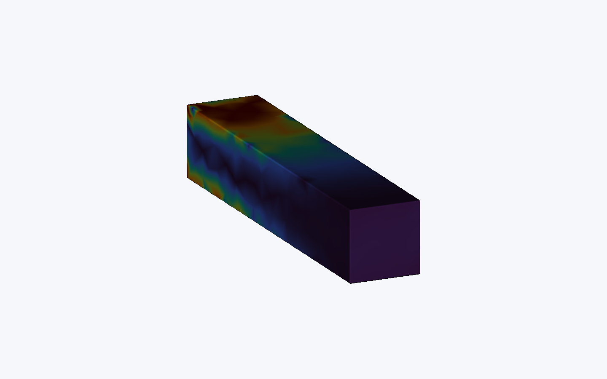
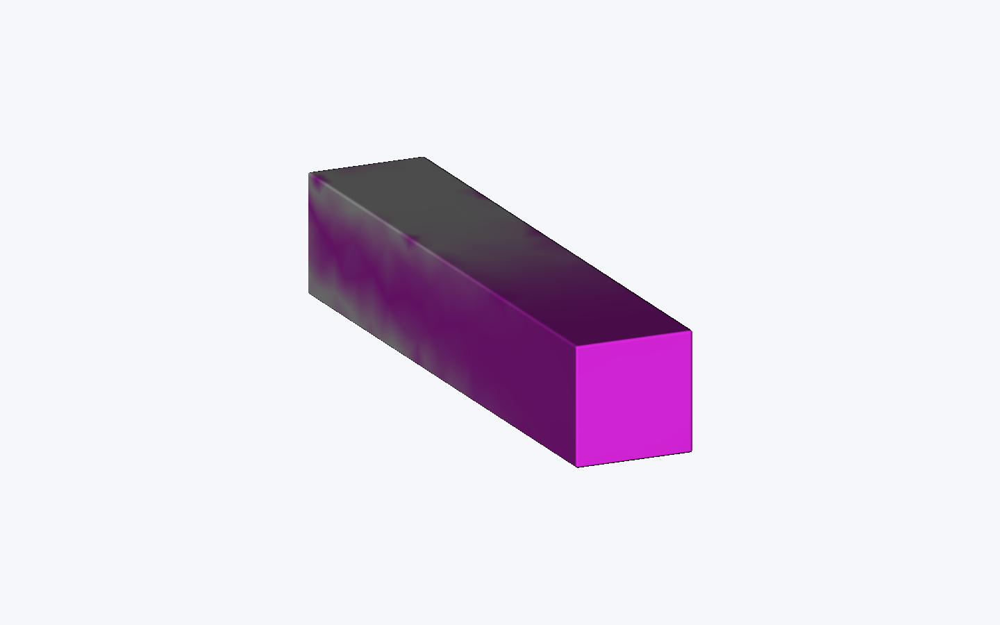
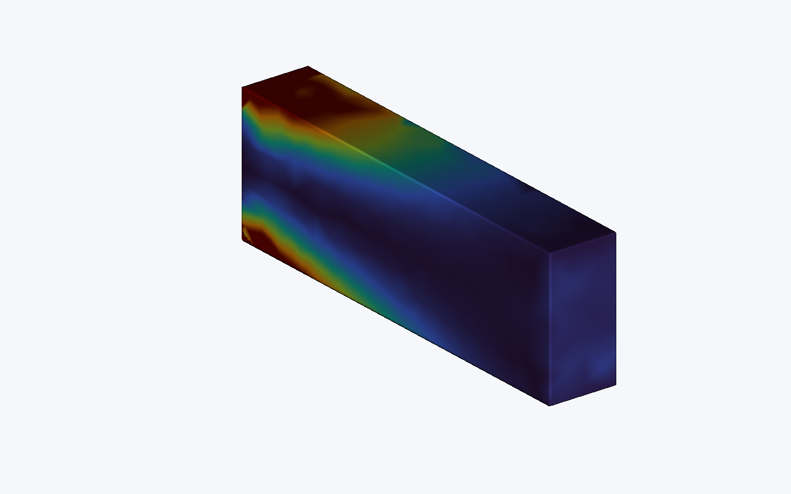
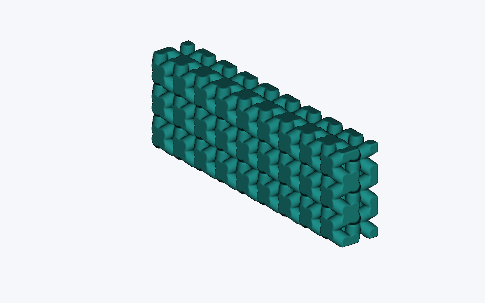
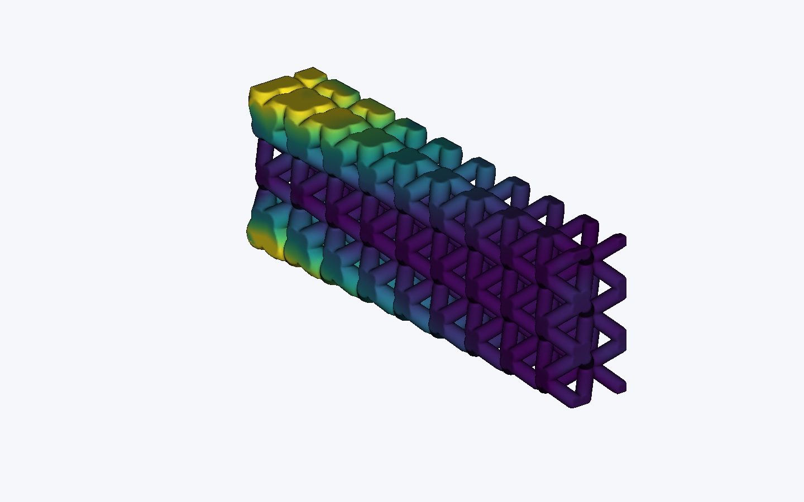

Simulation-driven design#
This tutorial shows how to bring a finite-element result back into OpenVCAD and use it like any other spatial attribute. We will walk through a cantilever that places more Vero material where its baseline strain energy is high, then use the same pattern to grade a BCC lattice.
You should already be comfortable with Getting Started and Functional grading. You do not need prior FEniCSx experience to follow the OpenVCAD parts of the tutorial.
The workflow is:
make geometry -> create a simulation mesh -> solve -> import the result
-> check coverage -> turn the result into an attribute -> update the design
One rule keeps the workflow easy to reason about: simulation results are data, not geometry. In these studies, we retain the original OpenVCAD geometry and attach result attributes to it. If your solver mesh came from another CAD system, import that source geometry separately and align it with the result dataset.
1. Run the cantilever study#
The complete example is 01_cantilever_material_feedback.py. It starts with a 30 x 6 x 6 mm cantilever, solves a soft Agilus30 baseline, imports the strain-energy result, and converts that result into an Agilus30/Vero composition.
The study uses a pinned conda environment so FEniCSx, PETSc, and MPI do not become normal OpenVCAD dependencies. Create it once:
conda env create --file examples/applications/simulation_driven_design/environment.yml
Install OpenVCAD normally from PyPI into that environment:
conda run -n openvcad-fenicsx python -m pip install openvcad
Now run the faster tutorial-sized version:
conda run -n openvcad-fenicsx python \
examples/applications/simulation_driven_design/01_cantilever_material_feedback.py --fast
Use the same command without --fast for the default mesh and higher-resolution outputs. Study outputs go to .tmp/simulation_driven_design/study1_cantilever/, including the XDMF/HDF5 result bundle, renders, solver log, and metrics.json.
Note
The study runs in serial and rejects MPI sizes above one. Native Windows is not supported by this conda-forge FEniCSx environment; use Linux under WSL2.
2. Bring a result field into OpenVCAD#
The reusable OpenVCAD feature begins after the solve. A result dataset needs:
point coordinates;
four point indices for every TET4 cell;
one or more named point or cell fields.
The study constructs the dataset from the solver arrays:
results = pv.UnstructuredFieldDataset.from_tetrahedra(points, cells)
results.add_point_scalar(
"projected_strain_energy_density",
projected_energy,
units="mJ/mm^3",
)
results.add_point_vector(
"baseline_displacement",
displacement,
units="mm",
)
You can inspect what was imported before using it:
for name in results.field_names:
field = results.field_metadata(name)
print(name, field.association, field.component_count, field.units)
Then create ordinary OpenVCAD attributes:
energy = results.float_attribute("projected_strain_energy_density")
displacement = results.vec3_attribute("baseline_displacement")
Point fields interpolate between the four corners of each tetrahedron. Cell fields return one constant value for the entire cell, so they can have visible jumps at cell boundaries. OpenVCAD never silently converts cell results to point results; ask the solver to project or recover a point field when you need a smooth design control.
For a small solver-neutral example you can run without FEniCSx, see 03_array_result_import.py:
./.venv/bin/python examples/applications/simulation_driven_design/03_array_result_import.py
3. Check that the field covers the design#
The simulation mesh approximates the cantilever boundary, while the retained OpenVCAD box is exact. A few OpenVCAD sample points can therefore fall just outside the tetrahedral surface.
Check that mismatch before rendering or compiling:
coverage = results.coverage(
sample_positions,
outside="boundary_clamp",
max_distance=clamp_distance,
)
print("inside:", coverage.inside_count)
print("clamped:", coverage.boundary_clamped_count)
print("outside:", coverage.outside_count)
print("largest clamp:", coverage.maximum_clamp_distance)
There are three outcomes:
A point is inside and samples normally.
A point is just beyond the meshed boundary and is clamped to the nearest boundary point, but only within
max_distance.A point is truly outside and remains an error.
Choose max_distance from the expected mesh-boundary approximation—not from the size of the whole part. If many points clamp, points collect on one side, or distances approach the limit, check coordinate alignment and units rather than increasing the distance. Avoid silent zero or constant fill because it can turn an alignment error into a plausible-looking design.
Once coverage passes, create the attribute with the same bounded policy:
energy = results.float_attribute(
"projected_strain_energy_density",
outside="boundary_clamp",
max_distance=clamp_distance,
)
source_root.set_attribute("projected_strain_energy_density", energy)
4. Turn strain energy into a design signal#
Raw solver values are rarely ready to drive material or geometry directly. The study uses the 5th and 95th percentiles as explicit bounds, normalizes that interval to 0–1, and clamps values beyond it:
control = energy.normalize(robust_minimum, robust_maximum).clamp(0.0, 1.0)
This makes the design rule easy to read:
0means the low end of the chosen result range;1means the high end;values outside the range stop at the nearest bound.
The first render below shows that normalized 0–1 signal with a high-contrast palette. It is a display of the imported strain-energy result after the same named normalization used by the feedback rule; the physical values remain available in projected_strain_energy_density.
Normalized baseline strain-energy signal

Agilus30/Vero composition from that signal

5. Convert the signal into material composition#
Study 1 uses a monotonic allocation: higher energy receives more Vero. It adjusts the allocation until the tetrahedral-volume-weighted Vero fraction is 35%, so the design changes where material is used without changing the named material budget.
The resulting vero_fraction field is exposed and attached like any other attribute:
vero_fraction = results.float_attribute(
"vero_fraction",
outside="boundary_clamp",
max_distance=clamp_distance,
)
source_root.set_attribute("vero_fraction", vero_fraction)
converter = pv.VolumeFractionsExpressionConverter(
input_attributes=["vero_fraction"],
materials=[10, 8],
expressions=["1.0 - vero_fraction", "vero_fraction"],
)
final_root = pv.AttributeModifier(converter, source_root)
The two expressions make the budget explicit: the Agilus30 and Vero fractions sum to one everywhere. The current default study reaches a weighted Vero mean of 0.3500000014; values range from 0.1554 to 0.9982 across the part.
This composition-to-property relationship is illustrative. A production workflow can replace it with a calibrated attribute resolver based on measured printer and material data.
6. Perform one verification solve#
The study performs exactly one verification solve using the updated composition. This is a useful check that the result-driven change has the intended direction; it is not an iterative optimizer or topology optimization.
Default-study result |
Baseline |
Verification |
|---|---|---|
Maximum displacement |
|
|
Compliance |
|
|
Strain energy |
|
|
These large changes reflect the deliberately wide illustrative stiffness gap between the soft baseline and the Vero-rich verification design. They should not be treated as a calibrated PolyJet prediction.
Agilus30 is nonlinear, viscoelastic, rate-dependent, and capable of large deformation. The example uses literature-based linearized values and a locking-resistant mixed displacement/pressure solve only to demonstrate the workflow. See the official Agilus30 data sheet, Vero data sheet, and the linearized literature source.
7. Use the same pattern to grade a BCC lattice#
The second study changes geometry instead of composition. Run it with:
conda run -n openvcad-fenicsx python \
examples/applications/simulation_driven_design/02_bcc_radius_feedback.py --fast
It solves a nonuniformly loaded solid envelope, imports the projected strain-energy field, and maps the normalized result to a BCC beam and node radius:
radius = control.map_range(0.0, 1.0, 0.55, 1.30)
cell_map = mm.rectangular_cell_map(bounds, cells=(9, 3, 3))
lattice = mm.bcc(cell_map, beam_radius=radius, node_radius=radius)
The source result is easiest to read in the normalized high-contrast view:

Normalized solid-envelope strain energy. The upper portion of the loaded end carries the strongest response and therefore receives the largest lattice radius.#
The comparison uses identical bounds, cells, clipping, camera, and resolution. Only the radius rule changes.
Constant radius: 0.90 mm

Result-driven radius: 0.55–1.30 mm

At the default 0.6 mm sampling resolution, the current result-driven lattice uses approximately 30.42% less implicit volume than the constant-radius comparison. Study 2 does not run lattice FEA, so this is a material-use and geometry-control comparison—not a performance claim.
8. Load results from XDMF/HDF5#
When a solver already writes a compatible bundle, load it directly instead of rebuilding the dataset from arrays:
results = pv.XDMFFieldLoader.load(
"results.xdmf",
grid_name="OpenVCADMesh",
)
for name in results.field_names:
print(name, results.field_metadata(name).association)
The runnable 04_xdmf_result_import.py creates a supported SimulationCompiler bundle, adds point scalar/vector results, and loads both point- and cell-associated fields through the public API:
conda run -n openvcad-fenicsx python \
examples/applications/simulation_driven_design/04_xdmf_result_import.py
The first release supports XDMF 3 Uniform TET4/XYZ grids with HDF-backed Node or Cell scalar and three-component vector fields. Unsupported collections, tensors, mixed topology, inline arrays, HEX8, and time-series features fail clearly rather than being guessed.
9. When a result does not line up#
Most points are outside: confirm that geometry and results use the same origin, axis directions, and units.
Displacement looks shifted: a displacement field does not deform the result domain automatically. The dataset still uses reference coordinates.
Vectors point the wrong way: position and vector transforms are separate; rotate vector components explicitly when changing coordinate frames.
The field has cell-shaped jumps: check its association. Cell fields are intentionally piecewise constant.
A named field is missing: print
field_namesandfield_metadata()and verify the selected XDMF grid.Many points clamp near the limit: fix the mesh or alignment instead of widening
max_distanceuntil the error disappears.
Use dataset.transformed(position_transform, vector_transform) when the consuming OpenVCAD geometry and result file genuinely use different coordinate systems. Unit metadata is descriptive; scaling is always explicit.